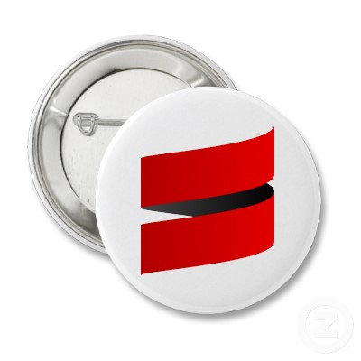
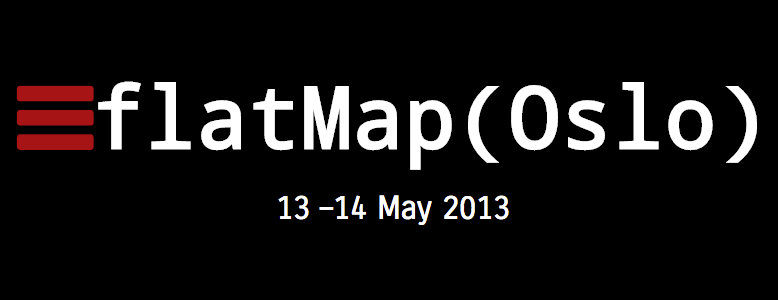

SCALA
Introduksjonskurs
Faggruppe for Scala & JVM
9. okt: Grunnleggende Scala
30. okt: Funksjonell programmering
11. nov: Webapp med Scala
SCALA
Et moderne, statisk typet, objekt-funksjonelt programmeringsspråk på JVM-en
Martin Odersky

Hvorfor Scala?
- Elegant, konsis syntaks
- Funksjonelt og objektorientert
- Avansert typesystem
- Høy ytelse
Community

Hvem bruker Scala?
Basically, it's the future
Scalasyntaks 101
Definere ting
// En ikke endrbar verdi, tenk final i Java
val fødselsnummer = 02017912345
// En endrbar variabel
var navn: String = "Torbjørn Vatn"
Method Man
// En metode med returverdi
def beregnAlder(personNummer: String): Int = {
val alder = 0// kode som beregner alder
alder
}
// En metode uten returverdi, tenk void i Java
def endreNavn(nyttNavn: String) {
navn = nyttNavn
}
Ifs and buts
// En if/else er en expression, så den returnerer en verdi
val er2StørreEnn4 = if (2 > 4) "JA" else "NEI"
// En enkel for som looper over en range fra 1 til 10
for (i <- 1 to 10) { println(i) }
Let's get functional
// En funksjon fra to Ints til Boolean lagres i en verdi
val erStørreEnn = (x: Int, y: Int) => x > y
// Funksjonen kalles med to argumenter
if (erStørreEnn(2,4)) "JA" else "NEI"
Oppgaver
Oppgaver: http://git.io/0aMB8Q
Slides: http://froden.github.io/scalakurs
klasser, objekter, traits
Objektorientert programmering
Klasser
class Person
val p = new Person
Medlemsvariabler og getters/setters
class Person(val name: String, var age: Int)
val p = new Person("Bob", 25)
p.name // Bob
p.age = 26
Constructors
Primary constructor
class Person(age: Int) {
val category = if (age < 35) "young" else "old"
def sayHi = "Hi, I'm " + category
}
new Person(30).sayHi //Hi, I'm young
Auxillery constructors
class Date(val time: Long) {
def this(date: Date) = this(date.time)
}
Objekter
object Logger {
def log(msg: String) = println(msg)
}
Logger.log("It's all good!")
Companion-objekter
class Person(val name: String, val age: Int)
//I samme fil
object Person {
def apply(name: String, age: Int) = new Person(name, age)
}
val p = Person("Frode", 33)
Traits
trait Animal {
def greet = "I'm an animal"
}
class Dog extends Animal
class Fox extends Animal
- Abstrakte metoder og felter
- Konkrete metoder og felter
- Mixin composition
Traits
trait Animal {
def say: String
def greet = "I'm an animal that says " + say
}
class Dog extends Animal {
def say = "woof"
}
class Fox extends Animal {
def say = ???
}
Traits
trait Animal {
def say: String
}
trait Fourlegged
trait Furry
class Dog extends Animal with Fourlegged with Furry {
def say = "woof"
}
List
scala.immutable
- Implementerer isEmpty, head og tail.
- O(n) på de fleste operasjoner
- O(1) på prepend og head/tail-aksess
- Egnet for rekursive løsninger basert på head:tail-aksess
- Eksempler:
scala> 4 :: List(1, 2, 3) // Prepend, O(1) res0: List[Int] = List(4, 1, 2, 3)scala> List(1, 2, 3) ::: List(4) // Append, O(n), foretrekk prepend res1: List[Int] = List(1, 2, 3, 4)
map()
- map() tar inn en funksjon og utfører den på alle elementer
- map() transformerer listen ihht til funksjonen gitt inn
scala> val numbers = List(1,2,3)
numbers: List[Int] = List(1, 2, 3)
scala> numbers.map((x: Int) => x + 1)
res0: List[Int] = List(2, 3, 4)filter()
- filter() tar inn en funksjon (predikat)
- filter() returnerer et subsett av listen hvor predikatet er sant
scala> val myList = List(1, 2, 3, 4, 5, 6)
myList: List[Int] = List(1, 2, 3, 4, 5, 6)
scala> myList.filter((x: Int) => x > 3)
res0: List[Int] = List(4, 5, 6)List API eksempler
//Adder et element til begynnelsen av listen
def ::(x: A): List[A]
//Adder en liste til begynnelsen av listen
def :::(prefix: List[A]): List[A]
//Velger det første elementet i listen
def head: A
//Velger de resterende (foruten første) elementene i listen
def tail: A
//Velger de første n elementene i en liste
def take(n: Int): List[A]
//Velger de siste n elementene i en liste
def takeRight(n: Int): List[A]
List API eksempler 2
//Velger alle elementer bortsett fra de første n elementene i en liste
def drop(n: Int): List[A]
//Lager en liste av par ut fra to lister
def zip[B](that: GenIterable[B]): List[(A, B)]
Pattern Matching
En avansert versjon av switch i Java
Java-liknende eksempel
def toYesOrNo(choice: Int) = choice match {
case 1 => "yes"
case 0 => "no"
case _ => "error"
}
scala> toYesOrNo(1)
res0: String = yes
scala> toYesOrNo(10)
res1: String = error
Typesjekking
def f(x: Any) = x match {
case i:Int => "integer: " + i
case _:Double => "a double"
case s:String => "I want to say " + s
}
scala> f(2.0)
res0: String = a double
Verktøy for funksjonell programmering
Med pattern matching:
def fact(n: Int) = n match {
case 0 => 1
case n => n * fact(n - 1)
}
def fact(n: Int) =
if (n == 0) 1
else n * fact(n - 1)
Case Classes
Klasser med god støtte for pattern matching
Eksporterer konstruktørparametere
case class Person(firstName: String, lastName: String)
scala> val person = Person("Ola", "Nordmann")
person: Person = Person(Ola,Nordmann)
scala> person.firstName + " " + person.lastName
res0: String = Ola Nordmann
- Konstruktørparametere automatisk tilgjengelig etter instansiering
- Reduserer boilerplate-kode
Pattern matching på Person
def finnOla(person: Person) = person match {
case Person("Ola", 32) => println("Fant Ola 32!")
case Person("Ola", alder) => println("Fant en annen Ola som er " + alder)
case Person(navn, _) if navn.startsWith("O") => println("Fant en med navn på O")
case Person(navn, alder) => println("Fant: " + navn + ", " + alder)
}
Pattern matching på lister
def checkIfFirstPersonIsOla(persons: List[Person]) =
persons match {
case List(Person("Ola", _), _*) => true
case _ => false
}
scala> val persons = List(Person("Ola", "test"),
| Person("test", "test"))
persons: List[Person] = List(Person(Ola,test), Person(test,test))
scala> checkIfFirstPersonIsOla(persons)
res0: Boolean = true
_* betyr villlkårlig mange følgende elementer